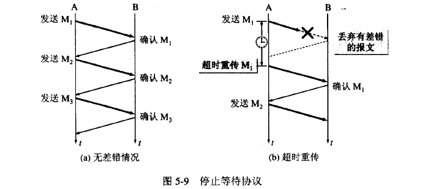

TCP 协议¶
TCP 协议的特点¶
- TCP 是面向连接的运输层协议
- 每一条 TCP 连接只能有两个端点。TCP 只能进行点对点通信
- TCP 提供可靠交付的服务。通过 TCP 连接传输的数据，无差错、不丢失、不重复、并且按序到达
- TCP 提供全双工通信。TCP 允许通信双方的应用进程在任何时候都能发送数据。TCP 通信的两端都设有发送缓存和接收缓存，用来临时存放双方通信的数据。
- 面向字节流。
面向字节流的含义是：虽然应用程序和 TCP 的交互是一个一个的数据块，但是 TCP 把应用程序交下的数据看成仅仅是一串的无结构的字节流。TCP 并不知道所传送的字节流的含义。TCP 不保证接收方应用程序所收到的数据块和发送方应用程序所发出的数据块具有对用关系。

TCP 根据对方给出的窗口值和当前网络拥塞的程度来决定一个报文段应包含多少个字节。如果应用程序传递到 TCP 缓存的数据块太长，TCP 可以把它划分短一些再传递。如果应用程序发来的数据块太短，TCP 也可以等待积累足够多的字节后再构成报文段发送。
可靠传输的工作原理¶
停止等待协议¶
"停止等待"：就是每发送完一个分组就停止发送，等待对方的确认。在收到确认后再发送下一个分组。
无差错的情况¶
A 发送分组 M1，发送完就暂停发送，等待 B 确认。B 收到 M1 后就向 A 发送确认。A 收到对 M1 的确认，继续发送下一个分组。
出现差错¶
B 接收 M1 出现差错，就丢弃 M1，其他什么也不做。A 只要超过一段时间没有收到确认，就认为刚才发送的分组丢失，因此重传前面发送的分组。这就叫做超时重传.

以上应该注意一下三点：
- A 发送完一个分组后，必须暂时保留已发送的分组的副本。只有在收到相应的确认后才能清楚保留的副本。
- 分组和确认必须进行编号。这样才能明确是哪一个发出去的分组收到了确认。
- 超时计时器设置的重传时间应当比数据在分组传输的平均往返时间更长一些。
确认丢失和确认迟到¶

如上图 a.B 所发送的对 M1 的确认丢失。A 在设定超时重传时间内没有收到确认，但并无法知道是自己发送的分组出错、丢失、或者 B 发送的确认丢失。因此 A 在超时计时器到期后就要重传 M1.现在 B 需要采取如下两个动作。
- 丢弃这个重复的分组 M1，不向上层交付。
- 向 A 发送确认。
如图 b。传输过程没有出现差错，但 B 对分组 M1 的确认迟到。A 回收到重复的确认。对重复的确认的处理很简单：收下后丢弃。B 任然会收到重复的 M1，并且同样丢弃重复的 M1。
连续 ARQ 协议¶
滑动窗口协议是 TCP 协议的精髓所在。

如图 a 发送方维持发送窗口，它的意义是：位于发送窗口内的 5 个分组可连续发送出去，而不需要等待对方的确认。连续的 ARQ 协议规定，发送当收到一个确认，就把发送窗口向前滑动一个分组的位置。接收方一般都是采用累积确认的方式。就是接收方不必对收到的分组逐个确认，而是可以收到几个分组后对按序到达的最后一个分组发送确认，这样就表示：到这个分组为止的所有分组都已经收到。
TCP 数据包格式¶

- 顺序号(32 位)：用来标识从 TCP 源端向 TCP 目的端发送的数据字节流，它表示在这个报文段中的第一个数据字节的顺序号。如果将字节流看作在两个应用程序间的单向流动，则 TCP 用顺序号对每个字节进行计数。序号是 32bit 的无符号数，序号到达 2^32－1 后又从 0 开始。当建立一个新的连接时，SYN 标志为 1(该报文段不携带数据，但是要消耗一个序号)，顺序号字段包含由这个主机选择的该连接的初始顺序号 ISN(Initial Sequence Number)。
- 确号(32 位)：包含发送确认的一端所期望收到的下一个顺序号。因此，确认序号应当是上次已成功收到数据字节顺序号加 1。只有 ACK 标志为 1 时确认序号字段才有效。TCP 为应用层提供全双工服务，这意味数据能在两个方向上独立地进行传输。因此，连接的每一端必须保持每个方向上的传输数据顺序号。
- TCP 报头长度(4 位)：给出报头中 32bit 字的数目，它实际上指明数据从哪里开始。需要这个值是因为任选字段的长度是可变的。这个字段占 4bit ，因此 TCP 最多有 60 字节的首部。然而，没有任选字段，正常的长度是 20 字节。
- 保留位(6 位)：保留给将来使用，目前必须置为 0。
控制位(control flags ，6 位)：在 TCP 报头中有 6 个标志比特，它们中的多个可同时被设置为 1 。依次为：
- ACK ：为 1 表示确认号有效，为 0 表示报文中不包含确认信息，忽略确认号字段。
- PSH ：为 1 表示是带有 PUSH 标志的数据，指示接收方应该尽快将这个报文段交给应用层而不用等待缓冲区装满。
- RST :用于复位由于主机崩溃或其他原因而出现错误的连接。它还可以用于拒绝非法的报文段和拒绝连接请求。一般情况下，如果收到一个 RST 为 1 的报文，那么一定发生了某些问题。
- SYN ：同步序号，为 1 表示连接请求，用于建立连接和使顺序号同步。
- FIN ：用于释放连接，为 1 表示发送方已经没有数据发送了，即关闭本方数据流。
窗口大小(16 位)：数据字节数，表示从确认号开始，本报文的源方可以接收的字节数，即源方接收窗口大小。窗口大小是一个 16bit 字段，因而窗口大小最大为 65535 字节。
校验和(16 位)：此校验和是对整个的 TCP 报文段，包括 TCP 头部和 TCP 数据，以 16 位字进行计算所得。这是一个强制性的字段，一定是由发送端计算和存储，并由接收端进行验证。
紧急指针(16 位)：只有当 URG 标志置 1 时紧急指针才有效。紧急指针是一个正的偏移量，和顺序号字段中的值相加表示紧急数据最后一个字节的序号。 TCP 的紧急方式是发送端向另一端发送紧急数据的一种方式。
选项：最常见的可选字段是最长报文大小，又称为 MSS(Maximum Segment Size) 。每个连接方通常都在通信的第一个报文（为建立连接而设置 SYN 标志的那个段）中指明这个选项，它指明本端所能接收的最大长度的报文段。选项长度不一定是 32 位字的整数倍，所以要加填充位，使得报头长度成为整字数。
数据：TCP 报文段中的数据部分是可选的。在一个连接建立和一个连接终止时，双方交换的报文段仅有 TCP 首部。如果一方没有数据要发送，也使用没有任何数据的首部来确认收到的数据。在处理超时的许多情况中，也会发送不带任何数据的报文段。
TCP 头格式¶
注意以下几点：
- TCP 的包是没有 IP 地址的，那是 IP 层上的事。但是有源端口和目标端口。
- 一个 TCP 连接需要四个元组来表示是同一个连接（src_ip, src_port, dst_ip, dst_port）准确说是五元组，还有一个是协议。但因为这里只是说 TCP 协议，所以，这里我只说四元组。
- 注意上图中的四个非常重要的东西：
- Sequence Number 是包的序号，用来解决网络包乱序（reordering）问题。
- Acknowledgement Number 就是 ACK——用于确认收到，用来解决不丢包的问题。
- Window 又叫 Advertised-Window，也就是著名的滑动窗口（Sliding Window），用于解决流控的。
- TCP Flag，也就是包的类型，主要是用于操控 TCP 的状态机的。
关于其它的东西，可以参看下面的图示
TCP 三次握手（建立连接）¶
所谓三次握手(Three-way Handshake)，是指建立一个 TCP 连接时，需要客户端和服务器总共发送 3 个包。三次握手的目的是连接服务器指定端口，建立 TCP 连接,并同步连接双方的序列号和确认号并交换 TCP 窗口大小信息.

TCP 连接建立的过程：¶
- 服务器 B 的 TCP 进程先创建传输控制块 TCB，准备接受客户进程的连接请求。然后服务器 B 进入 LISTEN 状态，等待客户端的连接请求。
- A 的 TCP 进程首先创建传输控制块 TCB，然后向 B 发出连接请求报文段，这时首部中的同部位 SYN=1，同时选择一个合适的初始序号 seq=x。TCP 规定 SYN 报文段不能携带数据。这时 TCP 客户进程进入 SYN-SEND 状态。
- B 接收到请求报文段后，如果同意建立连接，则向 A 发送确认。在报文段中把 SYN 位和 ACK 位设置为 1，确认号 ack=x+1，同时选择一个初始序号 seq=y。这个报文段也不能携带数据，但同样要消耗一个序号。这时服务为进入 SYN-RCVD 状态。
- TCP 客户进程收到 B 的确认后，还要向 B 发出确认。确认报文段 ACK=1，确认号 ack=y+1，而自己的选号 seq=x+1。TCP 规定 ACK 报文段可以携带数据。但是如果不携带数据则不消耗序列号，在这种情况下，下一个报文段的 seq=x+1。这时 TCP 连接已经建立，A 进入 ESTABLISHED 阶段。
- 当 B 收到 A 的确认后，也进入 ESTABLISHED 阶段。
SYN 攻击¶
在三次握手过程中，服务器发送 SYN-ACK 之后，收到客户端的 ACK 之前的 TCP 连接称为半连接(half-open connect).此时服务器处于 Syn_RECV 状态.当收到 ACK 后，服务器转入 ESTABLISHED 状态.Syn 攻击就是攻击客户端在短时间内伪造大量不存在的 IP 地址，向服务器不断地发送 syn 包，服务器回复确认包，并等待客户的确认，由于源地址是不存在的，服务器需要不断的重发直至超时，这些伪造的 SYN 包将长时间占用未连接队列，正常的 SYN 请求被丢弃，目标系统运行缓慢，严重者引起网络堵塞甚至系统瘫痪。
Syn 攻击是一个典型的 DDOS 攻击。检测 SYN 攻击非常的方便，当你在服务器上看到大量的半连接状态时，特别是源 IP 地址是随机的，基本上可以断定这是一次 SYN 攻击.在 Linux 下可以如下命令检测是否被 Syn 攻击 netstat -n -p TCP | grep SYN_RECV
一般较新的 TCP/IP 协议栈都对这一过程进行修正来防范 Syn 攻击，修改 tcp 协议实现。主要方法有 SynAttackProtect 保护机制、SYN cookies 技术、增加最大半连接和缩短超时时间等.但是不能完全防范 syn 攻击。
四次挥手（关闭连接）¶
TCP 的连接的拆除需要发送四个包，因此称为四次挥手(four-way handshake)。客户端或服务器均可主动发起挥手动作。
TCP 释放连接的过程：¶
- A 的应用进程向 TCP 发出释放连接报文段，并停止发送数据，主动关闭 TCP 连接。A 把释放连接报文段首部的 FIN 设置为 1，其序列号 seq=u,它等于前面已传送过的数据的最后一个字节的序号加 1.这是 A 进入 FIN-WAIT-1 状态，等待 B 的确认。TCP 规定 FIN 报文段即使不携带任何数据也要消耗一个序号。
- B 收到连接释放报文段后即发出确认，确认号是 ack=u+1,而这个报文段自己的序号是 v，v 于 B 前面已经发送过的数据的最后一个字节的序号加 1.然后 B 就进入 CLOSE_WAIT 状态。TCP 进程服务器这时通知高层应用进程，因而从 A 到 B 的这个方向的连接就释放了，这时 TCP 连接处于半关闭(half_close)状态。即 A 已经没有数据要发送了，但 B 如有数据发送 A 仍可以接受。
- A 收到来自 B 的确认后，进入 FIN-WAIT-2 状态，等待 B 发出连接释放报文段。
- 若 B 已经没有要向 A 发送的数据，其应用进程就通知 TCP 释放连接。这时 B 发出的连接释放报文 FIN=1.现在假定序号为 w（在半关闭状态 B 可能又发送了一些数据）。B 还必须重复上次已经发送的确认号 ack=u+1。这时 B 就进入 LAST-ACK 状态。
-
A 在收到 B 的释放报文段后，发出确认。在确认报文段把 ACK 设置为 1，确认号 ack=w+1，而自己的序列号 seq=u+1。然后进入 TIME-WAIT 状态。请注意现在连接还没有释放。必须经过时间等待计时器设置的时间 2MSL 后，A 进入 CLOSED 状态。MSL（最长报文段寿命）。
-
CLOSED: 这个没什么好说的了，表示初始状态。
- LISTEN: 这个也是非常容易理解的一个状态，表示服务器端的某个 SOCKET 处于监听状态，可以接受连接了。
- SYN_RCVD: 这个状态表示接受到了 SYN 报文，在正常情况下，这个状态是服务器端的 SOCKET 在建立 TCP 连接时的三次握手会话过程中的一个中间状态，很短暂，基本上用 netstat 你是很难看到这种状态的，除非你特意写了一个客户端测试程序，故意将三次 TCP 握手过程中最后一个 ACK 报文不予发送。因此这种状态时，当收到客户端的 ACK 报文后，它会进入到 ESTABLISHED 状态。
- SYN_SENT: 这个状态与 SYN_RCVD 遥想呼应，当客户端 SOCKET 执行 CONNECT 连接时，它首先发送 SYN 报文，因此也随即它会进入到了 SYN_SENT 状态，并等待服务端的发送三次握手中的第 2 个报文。SYN_SENT 状态表示客户端已发送 SYN 报文。
- ESTABLISHED：这个容易理解了，表示连接已经建立了。
- FIN_WAIT_1: 这个状态要好好解释一下，其实 FIN_WAIT_1 和 FIN_WAIT_2 状态的真正含义都是表示等待对方的 FIN 报文。而这两种状态的区别是：FIN_WAIT_1 状态实际上是当 SOCKET 在 ESTABLISHED 状态时，它想主动关闭连接，向对方发送了 FIN 报文，此时该 SOCKET 即进入到 FIN_WAIT_1 状态。而当对方回应 ACK 报文后，则进入到 FIN_WAIT_2 状态，当然在实际的正常情况下，无论对方何种情况下，都应该马上回应 ACK 报文，所以 FIN_WAIT_1 状态一般是比较难见到的，而 FIN_WAIT_2 状态还有时常常可以用 netstat 看到。
- FIN_WAIT_2：上面已经详细解释了这种状态，实际上 FIN_WAIT_2 状态下的 SOCKET，表示半连接，也即有一方要求 close 连接，但另外还告诉对方，我暂时还有点数据需要传送给你，稍后再关闭连接。
- TIME_WAIT: 表示收到了对方的 FIN 报文，并发送出了 ACK 报文，就等 2MSL 后即可回到 CLOSED 可用状态了。如果 FIN_WAIT_1 状态下，收到了对方同时带 FIN 标志和 ACK 标志的报文时，可以直接进入到 TIME_WAIT 状态，而无须经过 FIN_WAIT_2 状态。
- CLOSING: 这种状态比较特殊，实际情况中应该是很少见，属于一种比较罕见的例外状态。正常情况下，当你发送 FIN 报文后，按理来说是应该先收到（或同时收到）对方的 ACK 报文，再收到对方的 FIN 报文。但是 CLOSING 状态表示你发送 FIN 报文后，并没有收到对方的 ACK 报文，反而却也收到了对方的 FIN 报文。什 么情况下会出现此种情况呢？其实细想一下，也不难得出结论：那就是如果双方几乎在同时 close 一个 SOCKET 的话，那么就出现了双方同时发送 FIN 报文的情况，也即会出现 CLOSING 状态，表示双方都正在关闭 SOCKET 连接。
- CLOSE_WAIT: 这种状态的含义其实是表示在等待关闭。怎么理解呢？当对方 close 一个 SOCKET 后发送 FIN 报文给自己，你系统毫无疑问地会回应一个 ACK 报文给对方，此时则进入到 CLOSE_WAIT 状态。接下来呢，实际上你真正需要考虑的事情是察看你是否还有数据发送给对方，如果没有的话，那么你也就可以 close 这个 SOCKET，发送 FIN 报文给对方，也即关闭连接。所以你在 CLOSE_WAIT 状态下，需要完成的事情是等待你去关闭连接。
- LAST_ACK: 这个状态还是比较容易好理解的，它是被动关闭一方在发送 FIN 报文后，最后等待对方的 ACK 报文。当收到 ACK 报文后，也即可以进入到 CLOSED 可用状态了。
为什么建立连接协议是三次握手，而关闭连接却是四次握手呢？¶
这是因为服务端的 LISTEN 状态下的 SOCKET 当收到 SYN 报文的建连请求后，它可以把 ACK 和 SYN（ACK 起应答作用，而 SYN 起同步 作用）放在一个报文里来发送。但关闭连接时，当收到对方的 FIN 报文通知时，它仅仅表示对方没有数据发送给你了；但未必你所有的数据都全部发送给对方了， 所以你可以未必会马上会关闭 SOCKET,也即你可能还需要发送一些数据给对方之后，再发送 FIN 报文给对方来表示你同意现在可以关闭连接了，所以它这里 的 ACK 报文和 FIN 报文多数情况下都是分开发送的。
为什么 TIME_WAIT 状态还需要等 2MSL 后才能返回到 CLOSED 状态？¶
这是因为：虽然双方都同意关闭连接了，而且握手的 4 个报文也都协调和发送完毕，按理可以直接回到 CLOSED 状态（就好比从 SYN_SEND 状 态到 ESTABLISH 状态那样）；但是因为我们必须要假想网络是不可靠的，你无法保证你最后发送的 ACK 报文会一定被对方收到，因此对方处于 LAST_ACK 状态下的 SOCKET 可能会因为超时未收到 ACK 报文，而重发 FIN 报文，所以这个 TIME_WAIT 状态的作用就是用来重发可能丢失的 ACK 报文。
TCP 状态机¶
其实，网络上的传输是没有连接的，包括 TCP 也是一样的。而 TCP 所谓的“连接”，其实只不过是在通讯的双方维护一个“连接状态”，让它看上去好像有连接一样。所以，TCP 的状态变换是非常重要的。下面是：“TCP 协议的状态机” 和 “TCP 建链接”、“TCP 断链接”、“传数据” 的对照图，我把两个图并排放在一起，这样方便在你对照着看。
很多人会问，为什么建链接要 3 次握手，断链接需要 4 次挥手？
- 对于建链接的 3 次握手，主要是要初始化 Sequence Number 的初始值。通信的双方要互相通知对方自己的初始化的 Sequence Number（缩写为 ISN：Inital Sequence Number）——所以叫 SYN，全称 Synchronize Sequence Numbers。也就上图中的 x 和 y。这个号要作为以后的数据通信的序号，以保证应用层接收到的数据不会因为网络上的传输的问题而乱序（TCP 会用这个序号来拼接数据）。
- 对于 4 次挥手，因为 TCP 是全双工的，所以，发送方和接收方都需要 Fin 和 Ack。只不过，有一方是被动的，所以看上去就成了所谓的 4 次挥手。如果两边同时断连接，那就会就进入到 CLOSING 状态，然后到达 TIME_WAIT 状态。下图是双方同时断连接的示意图（你同样可以对照着 TCP 状态机看）：
另外，有几个事情需要注意一下：
- 关于建连接时 SYN 超时。试想一下，如果 server 端接到了 clien 发的 SYN 后回了 SYN- ACK 后 client 掉线了，server 端没有收到 client 回来的 ACK，那么，这个连接处于一个中间状态，即没成功，也没失败。于 是，server 端如果在一定时间内没有收到的 TCP 会重发 SYN-ACK。在 Linux 下，默认重试次数为 5 次，重试的间隔时间从 1s 开始每次翻倍，5 次的重试时间间隔为 1s, 2s, 4s, 8s, 16s，总共 31s，第 5 次发出后还要等 32s 就知道第 5 次也超时了，所以，总共需要 1s + 2s + 4s+ 8s+ 16s + 32s = 2^6 -1 = 63s，TCP 才会把断开这个连接。
- 关于 SYN Flood 攻击。一些恶意的人就为此制造了 SYN Flood 攻击——给服务器发了一个 SYN 后，就下线了，于是服务器需要默认等 63s 才会断开连接，这样，攻击者就可以把服务器的 syn 连接的队列耗尽，让正常的连接请求不能处理。于是，Linux 下给了一个叫 tcp_syncookies 的参数来应对这个事——当 SYN 队列满了后，TCP 会通过源地址端口、目标地址端口和时间戳打造出一个特别的 Sequence Number 发回去（又叫 cookie），如果是攻击者则不会有响应，如果是正常连接，则会把这个 SYN Cookie 发回来，然后服务端可以通过 cookie 建连接（即使你不在 SYN 队列中）。请注意，请先千万别用 tcp_syncookies 来处理正常的大负载的连接的情况。 因为，synccookies 是妥协版的 TCP 协议，并不严谨。对于正常的请求，你应该调整三个 TCP 参数可供你选择，第一个 是：tcp_synack_retries 可以用他来减少重试次数；第二个是：tcp_max_syn_backlog，可以增大 SYN 连接数；第三个 是：tcp_abort_on_overflow 处理不过来干脆就直接拒绝连接了。
- 关于 ISN 的初始化。ISN 是不能 hard code 的，不然会出问题的——比如：如果连接建好后始终用 1 来做 ISN，如果 client 发了 30 个 segment 过去，但是网络断了，于是 client 重连，又用了 1 做 ISN，但是之前连接的那些包到了，于是就被当成了新连接的包，此时，client 的 Sequence Number 可能是 3，而 Server 端认为 client 端的这个号是 30 了。全乱了。RFC793 中 说，ISN 会和一个假的时钟绑在一起，这个时钟会在每 4 微秒对 ISN 做加一操作，直到超过 2^32，又从 0 开始。这样，一个 ISN 的周期大约是 4.55 个小时。因为，我们假设我们的 TCP Segment 在网络上的存活时间不会超过 Maximum Segment Lifetime（缩写为 MSL），所以，只要 MSL 的值小于 4.55 小时，那么，我们就不会重用到 ISN。
- 关于 MSL 和 TIME_WAIT。通过上面的 ISN 的描述，相信你也知道 MSL 是怎么来的了。我们注意到，在 TCP 的状态图中，从 TIME_WAIT 状态到 CLOSED 状态，有一个超时设置，这个超时设置是 2*MSL（RFC793 定义了 MSL 为 2 分钟，Linux 设置成了 30s）为什么要这有 TIME_WAIT？为什么不直接给转成 CLOSED 状态呢？主要有两个原 因：1）TIME_WAIT 确保有足够的时间让对端收到了 ACK，如果被动关闭的那方没有收到 Ack，就会触发被动端重发 Fin，一来一去正好 2 个 MSL，2）有足够的时间让这个连接不会跟后面的连接混在一起（你要知道，有些自做主张的路由器会缓存 IP 数据包，如果连接被重用了，那么这些延迟收到的包就有可能会跟新连接混在一起）。
- 关于 TIME_WAIT 数量太多。从上面的描述我们可以知道，TIME_WAIT 是个很重要的状态，但是如果在大并发的短链接下，TIME_WAIT 就会太多，这也会消耗很多系统资源。只要搜一下，你就会发现，十有八九的处理方式都是教你设置两个参数，一个叫 tcp_tw_reuse，另一个叫 tcp_tw_recycle 的参数，这两个参数默认值都是被关闭的，后者 recyle 比前者 resue 更为激进，resue 要温柔一些。另外，如果使用 tcp_tw_reuse，必需设置 tcp_timestamps=1，否则无效。这里，你一定要注意，打开这两个参数会有比较大的坑——可能会让 TCP 连接出一些诡异的问题（因为如上述一样，如果不等待超时重用连接的话，新的连接可能会建不上。正如官方文档上说的一样“It should not be changed without advice/request of technical experts”）。
- 关于 tcp_tw_reuse。官方文档上说 tcp_tw_reuse 加上 tcp_timestamps（又叫 PAWS, for Protection Against Wrapped Sequence Numbers）可以保证协议的角度上的安全，但是你需 tcp_timestamps 在两边都被打开。
- 关于 tcp_tw_recycle。如果是 tcp_tw_recycle 被打开了话，会假设 对端开启了 tcp_timestamps，然后会去比较时间戳，如果时间戳变大了，就可以重用。但是，如果对端是一个 NAT 网络的话（如：一个公司只用一 个 IP 出公网）或是对端的 IP 被另一台重用了，这个事就复杂了。建链接的 SYN 可能就被直接丢掉了（你可能会看到 connection time out 的错误）。
- 关于 tcp_max_tw_buckets。这个是控制并发的 TIME_WAIT 的数量，默 认值是 180000，如果超限，那么，系统会把多的给 destory 掉，然后在日志里打一个警告（如：time wait bucket table overflow），官网文档说这个参数是用来对抗 DDoS 攻击的。也说的默认值 180000 并不小。这个还是需要根据实际情况考虑。
Again，使用 tcp_tw_reuse 和 tcp_tw_recycle 来解决 TIME_WAIT 的问题是非常非常危险的，因为这两个参数违反了 TCP 协议（RFC1122）
其实，TIME_WAIT 表示的是你主动断连接，所以，这就是所谓的“不作死不会死”。试想，如果让对端断连接，那么这个破问题就是对方的了，呵呵。另外，如果你的服务器是于 HTTP 服务器，那么设置一个 HTTP 的 KeepAlive 有多重要（浏览器会重用一个 TCP 连接来处理多个 HTTP 请求），然后让客户端去断链接（你要小心，浏览器可能会非常贪婪，他们不到万不得已不会主动断连接）。